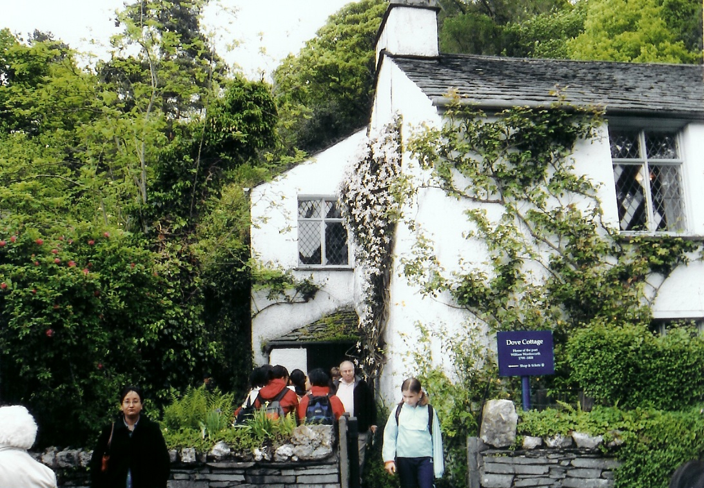

Thursday · Literature
(c. 1798–1832): , the lakes, and the second generation
From Wordsworth and Coleridge's (first edition 1798, expanded prefaces 1800 and 1802) through the second generation's brief careers (, , ) and into the early 1830s aftermath, British poets and novelists made , nature, and subjective experience into new literary authority. is a later teaching label for several decades of print culture that also included , 's (1818), as adjacent precursor, and women writers whose work early anthologies often erased.

{kind=link}
is a period label applied retrospectively by critics and teachers. The poets themselves used different terms: natural supernaturalism, , the spontaneous overflow of powerful feelings. The dates here run roughly from the 1798 through the deaths of (1821), (1822), and (1824), plus the early 1830s when younger Victorian writers were consolidating different aesthetics. Blake's major prophetic books (1789–1820s) run beside this calendar as adjacent work; Blake belongs in teaching even though his engraving-and-vision method differs from Wordsworth's walks. Women writers — , , Felicia Hemans, Letitia Elizabeth Landon — were active and published in these years; male-centered anthologies long treated them as footnotes. The elsewhere section names contemporaneous German Frühromantik and Hochromantik, French after 1815, and late Edo Japanese literary culture in the same decades as concrete parallel literary worlds — not as a forced West-plus-Asia pairing formula. High modernism and existentialism are earlier Capsules literature lessons and are not repeated here.
Select any words, or tap a dotted term.
- 1789 Blake's Songs; French Revolution year engraves and prints Songs of Innocence (1789). The French Revolution begins; radical energy that will shape British political debate for decades. Blake as visionary engraver-poet sits adjacent to the Lake Poets' later nature meditations.
- 1798 Lyrical Ballads first edition Wordsworth and Coleridge publish anonymously in Bristol. The collection includes Tintern Abbey and The Rime of the Ancient Mariner. The poems test vernacular diction and rural subjects against eighteenth-century poetic decorum.
- 1799–1808 Dove Cottage years William and move to in Grasmere, . Dorothy's journals record daily walks, weather, and domestic life. Coleridge visits; the creative circle is dense and collaborative.
- 1800–02 Prefaces to Lyrical Ballads Wordsworth's preface to the 1800 edition (expanded 1802) argues that poetry is the spontaneous overflow of powerful feelings and that poetic language should approach the real language of men in a state of vivid sensation. These prefaces become theory documents for later Romantic criticism.
- 1807 Poems in Two Volumes Wordsworth publishes Poems in Two Volumes, including Ode: Intimations of Immortality and I Wandered Lonely as a Cloud (the daffodils poem). Reviews are mixed; Francis Jeffrey attacks Wordsworth's system in the Edinburgh Review.
- 1812–16 Byron fame and exile wakes to find himself famous after Childe Harold's Pilgrimage cantos I–II (1812). Scandals, separation, debts; he leaves England in 1816 and never returns. Geneva summer of 1816 with the Shelleys and Mary Godwin produces ghost-story experiments.
- 1818 Frankenstein published 's appears (1818 first edition anonymous; her name on the 1823 edition). A novel about creation, responsibility, and the monstrous that emerges from Romantic ambition.
- 1819–20 Keats's great year and illness writes his major odes (spring and autumn 1819): Ode to a Nightingale, Ode on a Grecian Urn, To Autumn, and others. By late 1820 he knows he is dying of tuberculosis. He sails to Italy and dies in Rome in February 1821 at age twenty-five.
- 1821–22 Shelley's Adonais; his drowning writes Adonais (1821) as an elegy for . In July 1822 drowns when his boat Don Juan sinks in a storm off the Italian coast. He is thirty-nine.
- 1824 Byron dies in Greece travels to Greece to support the independence struggle against Ottoman rule. He falls ill with fever and dies at Missolonghi on 19 April 1824, age thirty-six. His death becomes European news; he is mythologized as the Romantic hero-poet.
- 1827–32 Late Wordsworth; Victorian transition Wordsworth publishes revised editions and settles into elder-poet status at Rydal Mount. By the early 1830s Tennyson and Browning represent a younger generation; Victorian sensibilities are consolidating. The Romantic moment is periodized retrospectively from this vantage.
- 1850 The Prelude published posthumously Wordsworth dies in 1850. His autobiographical epic The Prelude, written across many years and revised repeatedly, is published after his death. It becomes a central text for understanding Romantic subjectivity and memory.
Before
Eighteenth-century decorum, revolution politics, and Blake's prophetic start
British poetry at the end of the eighteenth century had rules. The Augustan taste for wit, balance, heroic couplets, and classical diction still governed serious verse. Alexander Pope had died in 1744, but his shadow was long: poetry addressed public themes in polished forms. Emotion was permissible but not unbounded; rural subjects were picturesque but not philosophically central. That decorum was about to be challenged.
The French Revolution of 1789 changed the weather of political hope and fear across Europe. Young British radicals — including Wordsworth and Coleridge — greeted the Revolution with enthusiasm. Wordsworth later wrote that bliss was it in that dawn to be alive, but to be young was very heaven! The Terror, war with France, and internal repression (the Treason Trials of the 1790s, suspension of habeas corpus) complicated that hope. Political radicalism and aesthetic experiment arrived together, not as separate conversations.

{kind=link}
was already printing and engraving his own illuminated books in the late 1780s. Songs of Innocence (1789) and Songs of Experience (1794) paired child-vision poems with darker adult counterparts: The Lamb and The Tyger, The Chimney Sweeper in both states. Blake's prophetic books — The Marriage of Heaven and Hell, Milton, Jerusalem — are visionary, political, and impossible to separate from their handmade visual form. He belongs in teaching even though he worked outside the circle and the London publishing networks Wordsworth and used. Think of Blake as an adjacent engine starting at the same time, not a footnote or precursor.
The era
1798 Lyrical Ballads through the early 1830s: two generations and several deaths
The usual origin date is 1798, the year Wordsworth and Coleridge published anonymously. The collection is short: twenty-three poems in the first edition, including Coleridge's long Rime of the Ancient Mariner and Wordsworth's blank-verse meditation Lines Composed a Few Miles above Tintern Abbey. The title itself is a manifesto claim: lyrical signals personal feeling; ballads signals folk and narrative tradition. The poems test vernacular diction (We Are Seven, The Idiot Boy) and supernatural strangeness (the Mariner) against eighteenth-century polish. Reviewers were puzzled or hostile; later editions added Wordsworth's preface (1800, expanded 1802) as theory.

{kind=link}
In 1799 William and moved into in Grasmere, a small rented house in the . Coleridge lived nearby for part of the time. Dorothy's journals record daily walks, weather, flowers, and domestic routines; her prose fed William's poems. The Grasmere years (1799–1808) are the workshop of early Romantic nature poetry. Wordsworth's Poems in Two Volumes (1807) appeared to mixed reviews; Francis Jeffrey in the Edinburgh Review mocked the Lakers' system of simplicity. But the major work was being written.

{kind=link}
The second generation — , , and — were born in the 1790s and came of age in the 1810s. 's Childe Harold's Pilgrimage cantos I–II (1812) made him famous overnight. Scandal, debt, and a separation from his wife drove him into exile in 1816; he never returned to England. had already been expelled from Oxford for atheism, estranged from his family, and remarried to Mary Godwin after his first wife's suicide. was training as a surgeon and writing poetry in Hampstead. These three poets shared radical politics (to varying degrees), short lives, and a sense that Wordsworth's generation had grown conservative.
How it showed up
Poems, a novel, prefaces, letters — and four figures to read slowly
shows up on the page as several forms at once. There are Wordsworth's blank-verse meditations (Tintern Abbey, The Prelude), Coleridge's supernatural narratives (Ancient Mariner, Kubla Khan), Blake's engraved prophecies, 's satirical ottava rima (Don Juan) and Spenserian pilgrimage (Childe Harold), 's visionary odes and political allegories, 's odes and sensory lyrics, 's philosophical Gothic novel, and 's journals. No single style or method unites them. What they share is a claim that , feeling, and individual vision are primary literary authorities — more primary than inherited forms or social decorum.

William Wordsworth
1770–1850
Wordsworth's best poems are meditations on memory and perception: how a landscape seen years earlier returns in tranquillity, how childhood vision fades but leaves traces, how the self is made and remade by what it has seen. The 1802 Preface to remains the essential Romantic theory document.
(portrait from middle or later life). Author of Tintern Abbey (1798), the Preface to (1802), I Wandered Lonely as a Cloud (1807), and The Prelude (published 1850). Central figure in defining Romantic nature poetry, memory, and the self's continuity across time.Public domain painting / Wikimedia Commons
{kind=link}
John Keats
1795–1821
's 1819 odes are compact, sensory, and philosophically rich without forcing meaning. Ode to a Nightingale meditates on mortality and escape; Ode on a Grecian Urn on frozen beauty and the line Beauty is truth, truth beauty; To Autumn on ripeness without allegory. His letters introduce the concept of negative capability: remaining in uncertainties without irritably reaching after fact.
Same time elsewhere
German Romantik, post-1815 French Romantics, and late Edo Japan
was not only British. In the German-speaking lands, Frühromantik (early ) began around 1798 in Jena: Novalis, Friedrich and August Wilhelm Schlegel, Tieck, and others theorized fragments, irony, and the infinite in art. Hochromantik (high , roughly 1804–15) includes Eichendorff, E.T.A. Hoffmann's Gothic tales, and Caspar David Friedrich's landscape paintings. The chronology overlaps but the conversations were separate. Coleridge read German philosophy; English readers knew some German ballads. But Novalis and Wordsworth were not writing to each other. They are contemporaneous literary worlds, not translation pairs.
After
Victorian inheritance, anthology wars, and the Romantic label hardens
By the 1830s and 1840s younger poets — Tennyson, Browning, the Brontës — were consolidating what became Victorian literature. They inherited Romantic lyricism and interiority but turned toward different social and religious pressures. Tennyson's early volumes (1830, 1833, 1842) show him learning from and Wordsworth. Browning's dramatic monologues extend Romantic subjectivity into character voice. But the confidence in nature as moral teacher and as primary authority was already under pressure from industrial cities, religious doubt (pre-Darwin but building), and new aesthetic programs.
A question
A question to keep asking
If is a later teaching label for poets who had different programs — Wordsworth's nature and memory, Blake's visions, 's satire and exile, 's negative capability, 's creature story — what does the label still help us see that the individual books alone would not?
Fun fact
The 1816 Geneva summer produced both Frankenstein and vampire fiction
In June 1816, rented the Villa Diodati on Lake Geneva. Percy , Mary Godwin (later ), Claire Clairmont, and 's physician John Polidori joined him. Cold, wet weather kept the group indoors reading German ghost stories. proposed they each write a supernatural tale. Mary began what became ; Polidori drafted The Vampyre, which became one of the first modern vampire stories in English. The summer is famous as a creative crucible, though and also wrote more conventional Romantic lyrics that season. did not appear in print until 1818, and Mary revised it substantially for the 1831 edition. The ghost-story challenge is a good anecdote; the years of drafting and editing are the real literary work.